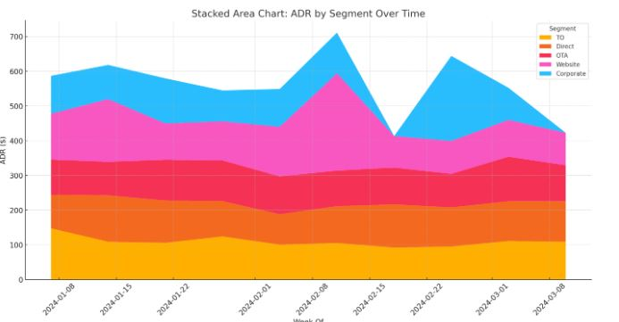

Hotel Projection & Booking Pace Analysis Tool (SQL-Based)
Compare future performance against historical benchmarks and recent trends
This tool enables Revenue Managers to analyze On-the-Books (OTB) data, monitor pick-up trends, and assess forecast accuracy by leveraging historical data snapshots that simulate forward-looking performance — offering a more strategic view than relying solely on current data..
Hotel Booking Pace Analysis
Booking Pace-to-Projection Tool is built for revenue managers to track On-the-Books (OTB), Pickup trends, and forecast accuracy — using real historical data snapshots instead of today's data to simulate forward-looking performance.
🧠 Importance of Booking Pace — Resort-Focused Analysis
Booking Pace Answering How do transient room nights booked for the next 90 days compare to the room nights on the books at the same time last year?:
- Are we ahead or behind compared to last year?
- Are bookings slower this year?
- Do we need to adjust pricing, promotions, or stop-sells?
For resorts with long booking windows (30–90+ days), pace analysis helps forecast shoulder/peak periods, identify booking slowdowns, and refine channel and pricing strategies.
🔄 What We are covering Here?
"Use link to jump to section"- On The Books (OTB) Mix to Last Year
- Current Mix To Last Year Forecast- LY Actual
- 📊 OTB Variance & Pickup Analysis
- 📉 On The Book Variances To 1 Period Ago "Month"
- 📌 Pick Up Variance To 1 Period Ago (Projection PU - 1PdAgo PU)
- 📈 OTB Mix Percentages
- 📐Measuring Segment ADR Change
- 🎯Segment ADR Change From Last Period "Month"
🔹 1. Performance Summary Comparison
• Metrics Compared:
- Projected Room Nights vs. Actual Pick-Up
- On the Books (OTB) now vs. OTB same days out in previous periods
- Variance over multiple time frames (Last Year, 1 Period Ago)
- 🤔How do transient room nights booked for the next 90 days compare to the room nights OTB for same time last year?:
- 😕How Bookings performance looking forwards compares to same time last year looking forwards.
- 📊 Variance between projected pickups and actual pickups from the same lead time (last year and last period)
- 📉 Variance in OTB now vs. what was on the books at the same days-out last year and last period
🔹 2. OTB Variance to Last Year
Question:
- How do transient room nights booked for the next 90 days compare to those on the books at the same time last year?
- Compare forward-looking OTB values now vs. forward-looking OTB values from the same date last year
💡 Why This Matters:
- 📈 Spot changes in weekday booking behavior
- 🧭 Understand seasonality by day of week
- 💰 Evaluate promo/rate effectiveness
- ⚠️ Flag underperforming dates early
- 📦 Layer segmentation for deeper insights (Direct, OTA, TO, etc.)
🔹 3. Pick-Up Variance Analysis
- Pick-Up Variance to Last Year (Proj PU - LY Actual PU)
-
Pick-Up Variance to 1 Period Ago (Proj PU - 1 Period Ago PU)
- Compares current projected pick-up to what was picked up 1 period ago, for the same arrival window.
- Measures whether projected pick-up exceeds or trails last year's actual pick-up for the same days out
Definitions:
- Proj PU = Projected pick-up required to meet target
- LY Actual PU = Last year's actual pick-up at same days out
🔹 4. OTB Mix % by Rate Type
Question:
- What is the weekly distribution of on-the-books room nights by rate type for the next 90 days?
- Helps track how rate mix shifts as arrival dates approach
🔹 5. Segment ADR Trends
- Segment ADR:
- ADR Change from Last Week:
- Average rate on the books per rate type, updated weekly for the next 90 days
- Week-over-week ADR variance by rate type, same days out perspective.
🔹 6. Detail Section
Scope:
90-day forward-looking view, comparing projections to historical data over multiple timeframes.
- These Sections covering:
- Compare current projections to historical actuals from:
- Transient On the Books
- Booked to Actual/Projection
- Booked Segments
- Transient Actual vs. Projection
- Last Year
- 1, 2, and 3 periods ago "Weekly" or "MOnthly"
- Compare current OTB to previous OTB values from:
- 1, 2, and 3 periods ago
- Last Year
- Evaluate projected pick-up vs actual pick-up over the same timeframes
- Transient room nights on the books for each rate type.
🔹 7. Rate and Price Sensitivity
- OTB ADR :
- Current vs. last week’s average rate for regular room nights.
- Price Sensitivity:
- Price Turndowns / (Transient OTB + Price Turndowns)
- Percentage of price turndowns relative to total transient interest.
- Formula:
🔹 8. Additional Demand :
Compares additional demand generated this year to the same period last year.
🔹 1. Performance Summary Comparison
Purpose:
Compare current performance against last year and recent trends (e.g., 1 period ago).
- 🤔How do transient room nights booked for the next 90 days compare to the room nights OTB for same time last year?:
- 😕How Bookings performance looking forwards compares to same time last year looking forwards.
- 📊 Variance between projected pickups and actual pickups from the same lead time (last year and last period)
- 📉 Variance in OTB now vs. what was on the books at the same days-out last year and last period
Question:
- How do transient room nights booked for the next 90 days compare to those on the books at the same time last year?
- Compare forward-looking OTB values now vs. forward-looking OTB values from the same date last year
🔹 3. Pick-Up Variance Analysis
- Pick-Up Variance to Last Year (Proj PU - LY Actual PU)
-
Pick-Up Variance to 1 Period Ago (Proj PU - 1 Period Ago PU)
- Compares current projected pick-up to what was picked up 1 period ago, for the same arrival window.
- Measures whether projected pick-up exceeds or trails last year's actual pick-up for the same days out
Definitions:
- Proj PU = Projected pick-up required to meet target
- LY Actual PU = Last year's actual pick-up at same days out
🔹 4. OTB Mix % by Rate Type
Question:
- What is the weekly distribution of on-the-books room nights by rate type for the next 90 days?
- Helps track how rate mix shifts as arrival dates approach
🔹 5. Segment ADR Trends
- Segment ADR:
- ADR Change from Last Week:
- Average rate on the books per rate type, updated weekly for the next 90 days
- Week-over-week ADR variance by rate type, same days out perspective.
🔹 6. Detail Section
Scope:
90-day forward-looking view, comparing projections to historical data over multiple timeframes.
- These Sections covering:
- Compare current projections to historical actuals from:
- Transient On the Books
- Booked to Actual/Projection
- Booked Segments
- Transient Actual vs. Projection
- Last Year
- 1, 2, and 3 periods ago "Weekly" or "MOnthly"
- Compare current OTB to previous OTB values from:
- 1, 2, and 3 periods ago
- Last Year
- Evaluate projected pick-up vs actual pick-up over the same timeframes
- Transient room nights on the books for each rate type.
🔹 7. Rate and Price Sensitivity
- OTB ADR :
- Current vs. last week’s average rate for regular room nights.
- Price Sensitivity:
- Price Turndowns / (Transient OTB + Price Turndowns)
- Percentage of price turndowns relative to total transient interest.
- Formula:
🔹 8. Additional Demand :
Compares additional demand generated this year to the same period last year.
Since we’re using historical data, we simulate what OTB looked like at a specific point in time (e.g., 2019-06-01), instead of relying on CURRENT_DATE.
🚫 Please do not get lost while reading — Too Much KPIs together, but we’ll break it down step-by-step.
📐 Dataset Logic Overview
- Snapshot Date: e.g., 01-Aug-2018
- Filter: Only bookings on file as of the snapshot
- Arrival Month: Used for grouping
- Weekday Split: From Friday to Thursday
- Output: Total room nights per weekday per month
📌 Example Output (Room Nights)
Month Of Fri Sat Sun Mon Tue Wed Thu Total Jan-19 527 656 673 649 764 1024 858 5151 Feb-19 821 578 854 644 696 739 899 5231 ... Dec-19 681 765 980 777 996 517 459 5175
🧠 Strategic Takeaways
- Weekday Strategy: If Wednesdays perform better than Fridays, promote shoulder nights or raise ADR midweek.
- Compression Forecast: Identify months at risk of early sellout.
- Rate Sensitivity: Later combine this with ADR to evaluate rate-volume trade-offs.
- Forecasting Accuracy: This sets the foundation for comparing projected vs. actuals.
How This Query WORKS
compares monthly room nights between what was forecasted and what was actually realized, for better visibility into forecast accuracy and performance.
🔍 Key Features:
- Forecast vs. Realized: It uses forecast type e.g( "OTB", "Realized", Forecast", "Projected") to differentiate the predicted vs. actual room nights.
- Days Out: Calculates lead time from the snapshot (reservation_status_date) to the actual arrival.
- As-of Date (Snapshot): Keeps track of the point-in-time when the data was valid, useful for pacing.
- Status Filter: Includes only meaningful statuses (Confirmed, Check-in, Check-out) to avoid noise from cancelled/no-shows (modify this logic if needed).
- Date Range: Filters only from May to September 2019 for the analysis window.
- Pivoted Format: Data is restructured to show Forecast, Realized, and their Difference side by side for each month.
Purpose:
This query compares forecasted vs realized room nights sold per month, helping you identify how accurate your forecasting was.
Used Tools: SQL Server, Excel, Tableau
Author: Ayman H. Salem – Revenue Strategist
🏨 1. "On The Book" Mix To Last Year


Charts - "On The Book" Mix


Charts - Current Mix vs LY Forecast


• Mix: The proportion (percentage) that each segment/channel contributes to the total OTB bookings. • To Last Year: Comparing this year’s OTB mix to the same point in time last year (e.g., 90 days out, same reservation status date).
In 2019, you sold 946 fewer rooms on that Month/Week (e.g., Friday) compared to 2020.
•A positive number would mean you sold more in 2020 than 2019
Current Mix To Last Year Forecast- LY Actual
In hotel forecasting terms, "Last Year Actual" (LY Actual) typically refers to: The actual number of rooms sold (or actual performance) on a specific arrival date last year — not just bookings, but the actualized check-ins.So, LY Actual ≠ Bookings made last year, it’s:
- The realized occupancy — how many guests checked in and stayed on that date.
- Based on the arrival_date, not the booking date.
- Does not include cancellations or no-shows — it's the true performance
More Explination
Current Mix – (Last Year Forecast – Last Year Actual)→ This measures if the current year’s OTB (CY Mix) is compensating for the gap between last year's forecast and what actually materialized Component What it does cy_mix Current year’s On The Books (forecast_type = 'OTB') ly_forecast Last year’s forecasted room sold (forecast_type = 'LY Forecast') ly_actual Last year’s actual performance (only Check-In / Check-Out) ly_gap The under- or overperformance last year: ly_forecast - ly_actual diff Your current performance compared to that gap: cy_mix - (ly_forecast - ly_actual)
NOTE
- ✅ A positive value = current OTB is stronger than the gap LY missed.
- ✅ A zero = current OTB is exactly covering last year’s gap.
- ✅ A negative value = current OTB is underperforming, even compared to LY forecast shortfalls
- ✅ We're not including canceled or no-show reservations in LY Actual —
- ✅ We're cleanly aggregate by week/Month
OTB Variance & Pickup Analysis
How much your confirmed bookings (with buffer) are ahead or behind the gap between LY forecast and actuals. It factors in how overestimated or underestimated LY forecasts were — giving a more refined measure than a straight CY - LY comparison
What “OTB Variance to 1 Period Ago” should mean:
• Compare Confirmed bookings (OTB) for 2020 to Confirmed bookings for the same period last year (2019) — either: o Same calendar day (e.g., Jan 15, 2020 vs Jan 15, 2019), or o Same lead time (e.g., 30 days before arrival in 2020 vs 30 days before arrival in 2019 — more complex).
"On The Book" Variance To 1 Period Ago "Month"

Pickup Variance To 1 Period Ago "Month"
.jpg)
Charts - OTB Variance


Charts - Pickup Variance


Understanding the Difference Between the Two Queries
🤓 Don’t worry — it only looks scary. You've got this!
✅ 1. "On The Book Variances To 1 Period Ago"
How does On the Books performance looking forwards compare to performance 1 period ago.: How does On the Books (OTB) performance looking forward compare to how it looked one period ago?
Data Source: forecast_type = 'OTB'
Metric: Projected room nights
Method: Compare the current OTB for future arrival dates to what the OTB was one period ago (e.g., a week or a month ago).
Output: Absolute values by month and weekday (no subtraction).
Use it to: Assess if your booking pace is improving or slowing down.
🤓 Don’t worry — it only looks scary. You've got this!
| Month Of | Fri | Sat | Sun | Mon | Tue | Wed | Thu | Total |
|---|---|---|---|---|---|---|---|---|
| Jan-20 | 907 | 592 | 598 | 538 | 566 | 1046 | 1199 | 5446 |
| Feb-20 | 765 | 809 | 742 | 612 | 490 | 504 | 608 | 4530 |
| Mar-20 | 623 | 1000 | 935 | 1072 | 870 | 663 | 767 | 5930 |
| Apr-20 | 701 | 1008 | 781 | 577 | 722 | 801 | 1074 | 5664 |
📌 Pick Up Variance To 1 Period Ago (Proj PU - 1 Period Ago Actual PU)
What it answers: How does the projected pick-up compare to what was picked up one period ago for the same arrival window?Data Source:
-
forecast_type = 'Forecast' for current projected PU-
forecast_type IN ('Check-In', 'Check-Out') for historical actual PU🧭 Please don’t get lost...
| Month Of | Fri | Sat | Sun | Mon | Tue | Wed | Thu | Total |
|---|---|---|---|---|---|---|---|---|
| Jan-20 | 936 | 615 | 740 | 534 | 673 | 1052 | 1182 | 5732 |
| Feb-20 | 714 | 821 | 743 | 556 | 430 | 627 | 677 | 4568 |
| Mar-20 | 546 | 977 | 913 | 1117 | 760 | 772 | 709 | 5794 |
| Apr-20 | 723 | 943 | 801 | 610 | 695 | 811 | 1056 | 5639 |
💡 Why is there a difference?
Because you’re comparing two different behaviors:
- OTB Variance: What’s already booked now vs. what was booked last period
- PU Variance: What you forecast will be booked vs. what was actually booked last period
😲 Rememebr
WE ARE NOT separating or comparing OTB vs LY Forecast (or LY Actual)Table showing total room nights (projected) per weekday and month for the year 2020, but combining the following forecast types:
- 'OTB' → your current bookings
- 'LY Forecast' → last year’s forecast (made in 2019 for 2020)
- 'LY Actual' → actual room nights realized in 2020
But here's the key:
- ✅ You’re aggregating all three types into a single number
- ❌ You're not separating or comparing OTB vs LY Forecast (or LY Actual)
| Aspect | OTB Variance To 1Pd Ago | PU Variance To 1Pd Ago | |||||||||||||||||||||||||||||||||||||||||||||||||||||||||||||
|---|---|---|---|---|---|---|---|---|---|---|---|---|---|---|---|---|---|---|---|---|---|---|---|---|---|---|---|---|---|---|---|---|---|---|---|---|---|---|---|---|---|---|---|---|---|---|---|---|---|---|---|---|---|---|---|---|---|---|---|---|---|---|---|
| Metric | Current On-The-Books | Forecasted Pick Up | |||||||||||||||||||||||||||||||||||||||||||||||||||||||||||||
| Compared To | OTB 1 period ago | Actual PU 1 period ago | |||||||||||||||||||||||||||||||||||||||||||||||||||||||||||||
| Data Source | Only OTB | Forecast + Check-In/Out | |||||||||||||||||||||||||||||||||||||||||||||||||||||||||||||
| Behavior Observed | How bookings evolved | How new bookings are expected to behave | |||||||||||||||||||||||||||||||||||||||||||||||||||||||||||||
| Result |

| Month | TO (%) | Direct (%) | OTA (%) | Group (%) | Corporate (%) | Total Rooms |
|---|---|---|---|---|---|---|
| Jan-20 | 82.3% | 12.1% | 30.2% | 0.0% | 5.6% | 121 |
| Apr-20 | 18.7% | 24.5% | 52.6% | 41.9% | 35.9% | 234 |
| Sep-20 | 89.6% | 6.3% | 4.1% | 0.0% | 0.0% | 312 |
💡 Strategic Interpretation
- High TO %: Suggests reliance on Tour Operators. Consider diversifying to improve ADR.
- Strong OTA months: May indicate short-lead FIT demand — ideal time to test last-minute rates.
- Group/Corporate activity: Peaks in shoulder months — align with event/conference calendar.
- Direct underperformance: Explore digital campaigns or loyalty offers to grow direct share.
📈 Use Cases for Revenue Strategy
- 📌 Identify seasonality shifts and adjust segmentation mix accordingly
- 💰 Align pricing with channel sensitivity — e.g., hold rate on strong Direct months
- 📉 Reduce dependency on low-ADR segments like TO during shoulder or peak months
- 🧠 Inform marketing campaigns, promo timing, and group strategy
🔗 Want to go deeper? Read the full breakdown here on the blog.
OTB Mix %
OTB Mix % stands for "On The Books Mix Percentage." It represents the proportion of room nights or revenue that a specific market segment contributes to the total rooms or revenue currently booked ("on the books") for a future arrival period.
If you have the following On The Books (OTB) reservations for a future month: M
| Market Segment | OTB Room Nights |
|---|---|
| OTA | 300 |
| Direct | 150 |
| TA/TO | 50 |
| Total | 500 |
Then the OTB Mix % is:
| Market Segment | OTB Room Nights | Mix % |
|---|---|---|
| OTA | 300 | 60% |
| Direct | 150 | 30% |
| TA/TO | 50 | 10% |
🔹 Why it's Important:
- It shows how dependent you are on certain channels or segments.
- Useful for distribution strategy — e.g., too much reliance on OTAs vs. Direct
- Helps track how your segment mix is evolving YoY or MoM.
- It informs pricing decisions, marketing focus, and sales targeting
- How each segment contributes to total ADR across weeks.
- The rise and fall of different segments like Corporate or Website.
- Visual dominance of certain channels in specific weeks (e.g., spikes from Website or Corporate ADR).
🧠 How to Read a Row Take this example:
| Week Of | TO | Direct | OTA | Website | Corporate |
|---|---|---|---|---|---|
| 06-Jan | 147.47 | 96.39 | 101.23 | 132.29 | 109.02 |
means:
• During the week of 6th January, the average daily rate was:
- $147.47 via Tour Operators
- $96.39 via Direct bookings
- $101.23 via OTAs
- $132.29 via the Hotel Website
- $109.02 for Corporate bookings
- Which channel performs best in terms of revenue or rates
- Trends over time: are some channels growing or declining?
- Seasonality: do OTAs spike in summer? Do corporate bookings fall on weekends?
- Mix & dependency: Is the hotel overly dependent on one segment (e.g., OTA)?
🔍 Patterns to Look For
- High Website values
- High OTA values
- Corporate dips
- Zero values
- → Strong direct digital presence (good for profit).
- → Reliance on third-party platforms (less profitable).
- on weekends/holidays→ Business travelers don't book then.
- → No bookings or missing data.